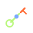

Tasks, events, evidence, reviews, and decisions have stable identifiers, deterministic hashes, and causal history.
Evidence before consensus
One record for work
across many minds.
Relay turns disconnected AI sessions and human reviews into bounded tasks, reproducible evidence, explicit disagreements, and accountable decisions.
Model neutral
Evidence first
Human accountable
01Questionbounded
02Evidencehashed
03Reviewindependent
04Decisionhuman
RELAYR/01
Why Relay exists
AI can produce more answers than one person can responsibly inspect.
Synthetic example
Two models disagree. The record keeps going.
-
 Claim
Claim
Two models assess a safety check on the same bounded task and reach opposite conclusions.
-
 Independent review
Independent review
A separate review fails the submission: evidence is incomplete, and the contradiction stays visible.
-
 Remediation
Remediation
The task returns with a remediation request—not a silent average of the two answers.
-
 Human decision
Human decision
A named person accepts the remediated result against the attached evidence and review history.
What works today
A measured system, not a promise.
Methods, commands, environments, artifacts, failures, and hashes travel with a claim without Relay executing them.
Independent review and reproduction are explicit. Contradictions trigger remediation; they are not silently averaged away.
Models can contribute and compare. A named person still accepts, remediates, rejects, or defers consequential work.
A credential-free projection of project and task status for GitHub Pages and local review.

06 Provider-neutral toolsLocal read-only tools for validate, verify, and prepare—without publishing or holding secrets.
What you can do today
Start from the public repo.
-
Clone the repository
github.com/brendohxd/Project-Relay — protocol schemas, examples, and this console.
-
Run the check suite
npm run checkvalidates the public surface and examples on a clean clone. -
Inspect status
Open the live status page here, or run
npm run consolefor a local multipage preview.
Explore
Separate pages for status, protocol, and roadmap.
01
Live status
Roadmap counts, pilot readiness, and current task projections from the canonical state snapshot.
Open status → 02How it works
Default evidence gate, interactive claim trace, trust boundary, and deliberate non-goals.
Open protocol → 03Control rooms
Local-first, Notion, Slack, and GitHub as rebuildable projections—never alternate authority.
Open control rooms → 04Release roadmap
Release route, build map, and what is deliberately deferred until the next gate.
Open roadmap → 05Get started
Clone, install, check, and run the local multipage console—public-safe only.
Open start →